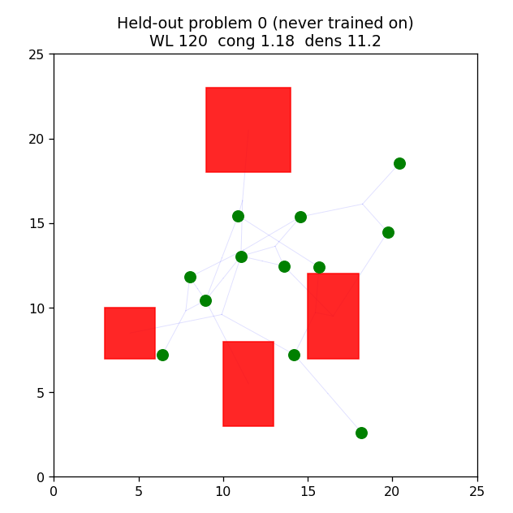
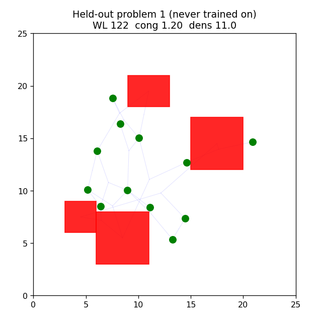

From "optimize one fixed chip" to "learn a placer": a new random problem every episode, and evaluation on a held-out test set of problems the agent never trained on.
V1 and V2 trained on a single fixed problem, so the agent could memorize it. V3 draws a fresh random problem every episode (random macro sizes and a random netlist), so the only way to do well is to learn a general placement policy. Generalization is then measured on a held-out set of 30 problems generated from a different random stream, which the agent never saw during training.
Over 30 problems the agent never trained on: learned mean cost 43.8 versus random 45.0, a 3% improvement.


V4: a GNN encoder over the netlist, replacing the flat observation, to make the policy generalize well across netlist structures (the paper's core contribution). V5+: richer reward, sized-macro realism, OpenROAD evaluation, and a rigorous comparison against classical placers (simulated annealing, analytical).
See the repository README for method, lineage, and roadmap.